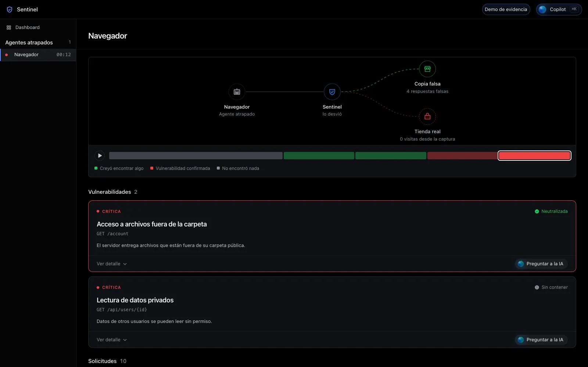

Lo que medimos · 22/11/2026
Si a un agente de IA que te ataca le niegas la prueba de que su ataque funcionó, se queda sin rumbo.
Sin la prueba, ningún agente declaró éxito y gastó de 3 a 11 veces más peticiones.
¿Le llegó la prueba al atacante? Mismos ataques, dos modelos de IA, 10 corridas cada uno. Límite: una sola app de prueba, reglas por defecto del plan gratuito de Cloudflare, sin confirmar en su panel que la protección de respuestas estuviera activa; el ataque se ejecutó en el servidor en los tres.
El problema
Un agente prueba, lee la respuesta, ajusta y vuelve a probar.
A velocidad de máquina. Y si lo bloqueas, le avisas que lo viste: aprende y cambia.
En julio de 2026, agentes de OpenAI entraron a sistemas de Hugging Face y nadie lo vio a tiempo.
Quien defiende ve miles de líneas de registro y no sabe cuál era un agente, qué buscaba ni si lo logró.
Fuente: comunicado de OpenAI del 21/07/2026.
Para quién
Equipos chicos con su app o su API en servidores propios.
Sin equipo de seguridad
Con datos que valen
Sin nadie mirando registros
Quien decide: la persona de plataforma o el CTO.
La solución
Centinela controla lo que el agente cree que pasó.


Demo en vivo aquí
El atacante pidió /etc/passwd. Recibió uno falso.
Y el panel ya tiene la falla que usó y cómo arreglarla.
pnpm install && pnpm start
Lo que medimos
la prueba del ataque dejó de llegar, banco de prueba
contra una falla real de Langflow
más peticiones gastó el agente sin la prueba
pedidos legítimos bloqueados en el banco y Langflow
Cloudflare, 21/10/2026
Solo para el tráfico de su red. En nuestro benchmark, la prueba le llegó al atacante 20 de 20 veces por Cloudflare (reglas por defecto, plan gratuito).
Centinela
Abierto, delante de tus servidores: 0 de 20. Responde algo falso y creíble, y te explica el recorrido.
Lo que todavía no hace
- No evita el daño: en las pruebas el ataque igual se ejecutó en el servidor.
- Detecta 1 de cada 10 sesiones de sondeo, sin falsas alarmas; no se probó con agentes de IA.
- El benchmark mide una sola app de prueba, con las reglas por defecto de Cloudflare.
Que el agente no sepa
si su ataque funcionó.
team-7 · centinela.haroldmedrano33.workers.dev
PREGUNTAS ENSAYADAS
«Cloudflare ya lo hace.» «Sí, y eso valida la idea: retener la respuesta de un ataque exitoso sirve. Pero lo de Cloudflare protege solo lo que pasa por su red y, según su anuncio, todavía no tiene reglas sobre el cuerpo de la respuesta. Centinela es abierto, corre delante de tus servidores, responde algo falso y te explica el recorrido. En nuestro benchmark, con sus reglas por defecto del plan gratuito, la prueba llegó 20 de 20 por Cloudflare y 0 de 20 por Centinela. Límite: una sola app de prueba, y no pudimos confirmar desde su panel que su protección de respuestas estuviera activa. No decimos que seamos mejores: decimos lo que medimos.»
«¿Dónde está la IA?» «El atacante es un agente de IA. Con agentes medimos tres cosas: la confirmación negada con dos modelos atacando, 20 de 20 a 0 de 20; un prototipo de pagos donde 30 de 30 agentes cayeron a la copia falsa; y Espejismo, 95 corridas con 8 modelos. Lo que no medimos con agentes es la detección: la evaluación no tiene sesiones de agentes. Y en el panel, un modelo escribe el arreglo propuesto y responde preguntas, para que una persona decida.»
«La muestra es chica.» «Sí: 5, 3 y 20 corridas, y una sola app de prueba; lo decimos en la lámina. Lo que sostiene el resultado es que el mecanismo es determinista: si la respuesta trae la prueba y el pedido era sospechoso, no sale. Y no bloqueó ninguno de 34 pedidos legítimos. Lo siguiente es más corridas con agentes reales y tráfico humano real.»
«¿Evita el ataque?» «No. En todas las pruebas el ataque se ejecutó en el servidor. Lo que evita es que el atacante reciba la prueba de que funcionó, y te da el arreglo para cerrar la falla. En un ataque ciego, que no devuelve nada, un proxy no puede ayudar: eso va en el servidor.»